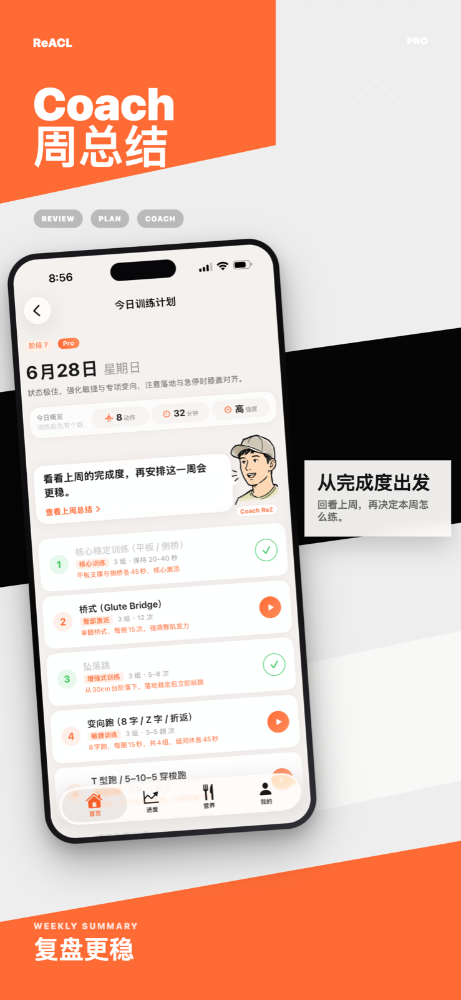
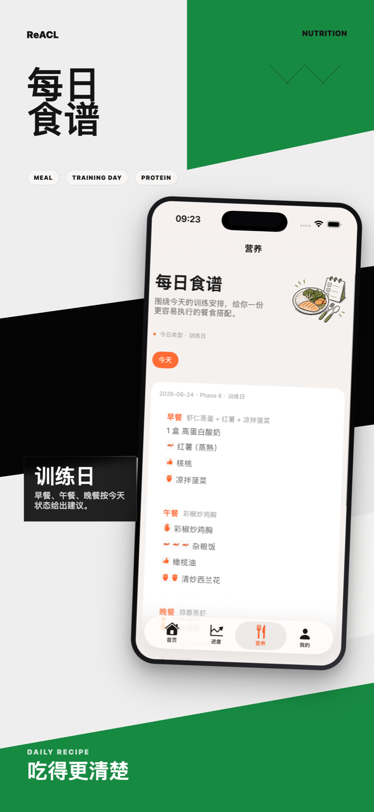
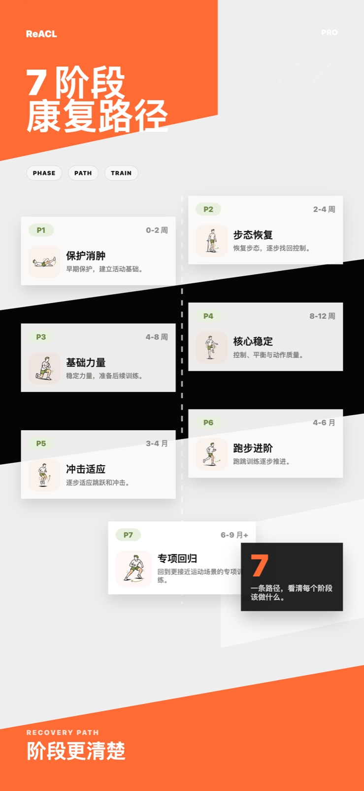
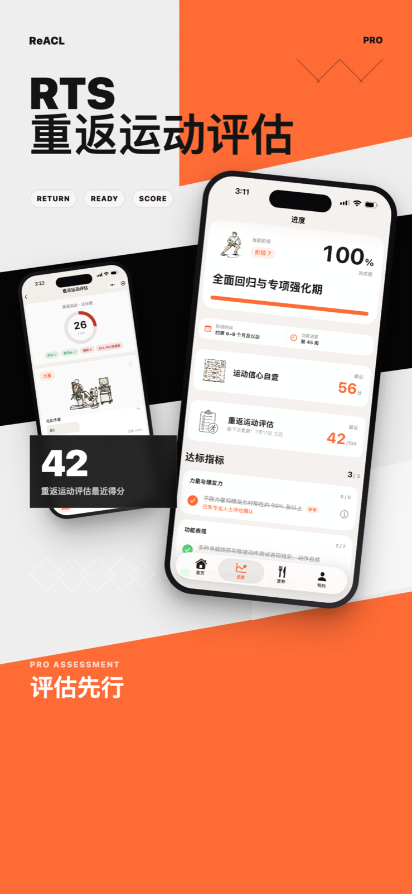

7个严谨的康复阶段
基于顶级运动康复科学，将你的康复拆解为7个精准阶段。每个阶段有明确的晋级标准指标，绝不拔苗助长。
从保护到强化
第一周消肿与ROM恢复，第四周基础力量建立，逐步增加单腿支撑与核⼼稳定，为恢复跑跳打下坚实基础。
全面回归运动
恢复直线慢跑，增加多方向变向，完成反向纵跳等高阶测试。打破心理恐惧，重新主宰赛场。
ACL 术后阶段化康复
科学定制 ACL 术后康复计划。
从术后第一步，到每一次冲刺。
基于顶级运动康复科学，将你的康复拆解为7个精准阶段。每个阶段有明确的晋级标准指标，绝不拔苗助长。
第一周消肿与ROM恢复，第四周基础力量建立，逐步增加单腿支撑与核⼼稳定，为恢复跑跳打下坚实基础。
恢复直线慢跑，增加多方向变向，完成反向纵跳等高阶测试。打破心理恐惧，重新主宰赛场。
每日感知疲劳度，根据你的恢复状态、手术时间、半月板情况与训练环境，
动态调整每天的训练强度与动作库。专属的智能康复师。






ReACL的每一个康复动作与晋级标准，均遵循国际前沿运动医学文献指南标准。
这不是感性判断，是严谨的科学循证。


Free 帮你建立康复基础；Pro 会结合当天状态、近期记录与训练环境，动态调整每天的训练。
选择适合你的使用方式
 进入小程序体验
进入小程序体验
 扫码开通 Pro（仅小程序）
扫码开通 Pro（仅小程序）